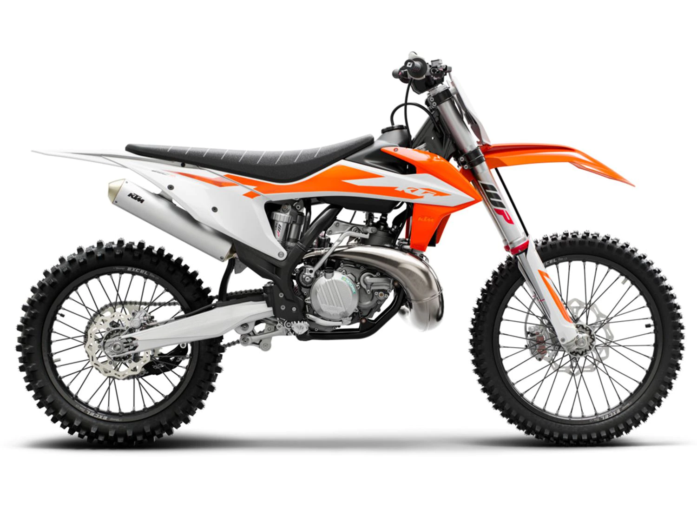

For decades, the 250 cc 2-stroke class has been at the forefront of pure unadulterated performance. It is epitomized by sweet-smelling 2-stroke smoke, top-end powerbands and 'Braaaap!'. The KTM 250 SX takes that to an all-new, gnarlier level. Thanks to a swathe of cutting-edge advancements across the board, this 2-stoke legend has stepped up, and even further out of reach of the competition.
